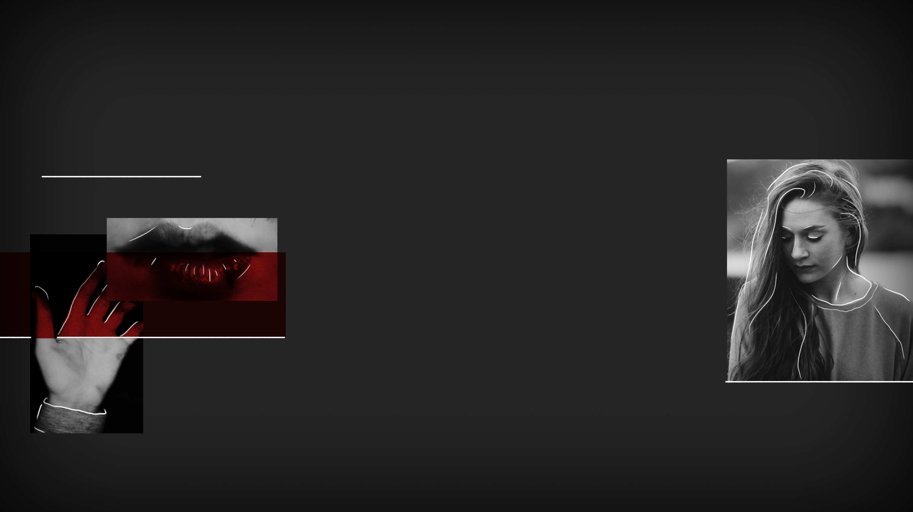

SPLITTED
SPLITTED

She looks at me with confused eyes.
«You said you were there right?» she asks me.
«Yes, I was.»
«And he was with you?»
«Yeah, the whole time. I told you, we talked.»
Mayhar keeps shaking his head. At one point, breaking the silence, he violently coughs with his hand covering his mouth. When he recomposes, we all see some blood on his palm.
«Oh mother, Mayhar what's wrong?» the sister yells, looking at him and then at me. «I'm sorry, I'm gonna have to ask you to leave. Please»
I move backwards. «Sure, just... I'll come back maybe, to check on him?»